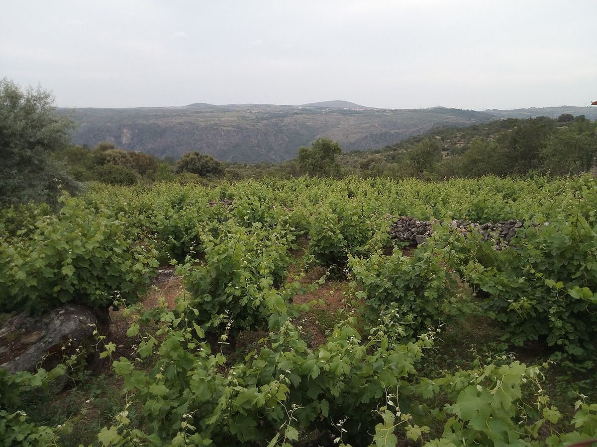

Arribes
Arribes è una denominazione di origine riconosciuta nel 2007 nel canyon del Duero, al confine tra Spagna e Portogallo, nelle province di Zamora e Salamanca. Si distingue per il vitigno autoctono Juan García e per i vigneti terrazzati.

Storia
La viticoltura negli Arribes del Duero è antica ed è stata tradizionalmente parte di un'economia rurale di sussistenza, in cui la vite condivideva i terrazzamenti con l'olivo, il mandorlo e gli alberi da frutto. Località come Fermoselle conservano numerose cantine scavate nella roccia sotto le case, testimonianza di una lunga tradizione enologica. Dopo decenni di abbandono di molti vigneti a causa dell'emigrazione e della difficoltà della coltivazione, la zona fu riconosciuta prima come Vino de la Tierra e poi, nel 2007, come Denominazione di origine, il che favorì il recupero dei vitigni locali e dei vecchi vigneti.
Territorio e clima
La denominazione si estende lungo il tratto di confine del Duero e di alcuni suoi affluenti, come il Tormes e lo Huebra, nell'ovest delle province di Zamora e Salamanca, in gran parte all'interno del Parco naturale di Arribes del Duero. I fiumi hanno scavato profondi canyon, i cui versanti sono sistemati a terrazze. Sul fondo e sui fianchi di questi canyon si crea un microclima di tipo mediterraneo, più mite di quello dell'altopiano circostante, con inverni dolci, estati calde e poche gelate, in contrasto con il clima continentale delle terre alte.
Suoli
Predominano suoli poco profondi e poveri, derivati dal granito e di tessitura sabbiosa, soprattutto nella parte di Zamora, mentre in alcune zone di Salamanca abbondano gli scisti. Sulle terrazze la terra è di solito sostenuta da muretti a secco.
Vitigni e stili
Il vitigno più caratteristico è il Juan García, un'uva rossa autoctona che dà vini di colore medio, aromi di frutta rossa, note speziate e un'acidità fresca. Si coltivano anche altre varietà locali, come il Rufete e il Bruñal, oltre a Tempranillo e Garnacha. Tra i bianchi spiccano la Malvasía, chiamata qui anche Doña Blanca, il Verdejo e l'Albillo. Si producono rossi giovani e affinati in botte, rosati e bianchi. I rossi di Juan García sono generalmente leggeri o di medio corpo, più freschi di quelli di altre zone del Duero castigliano.
Viticoltura e paesaggio
La morfologia del terreno impone spesso il lavoro manuale, su appezzamenti piccoli e di difficile accesso. Sono frequenti le vecchie viti ad alberello, spesso con varietà diverse mescolate nella stessa parcella, che costituiscono un patrimonio viticolo di grande interesse. Il paesaggio di terrazze, rocce e vigne sospese sopra i fiumi fa parte dell'identità di questa denominazione.